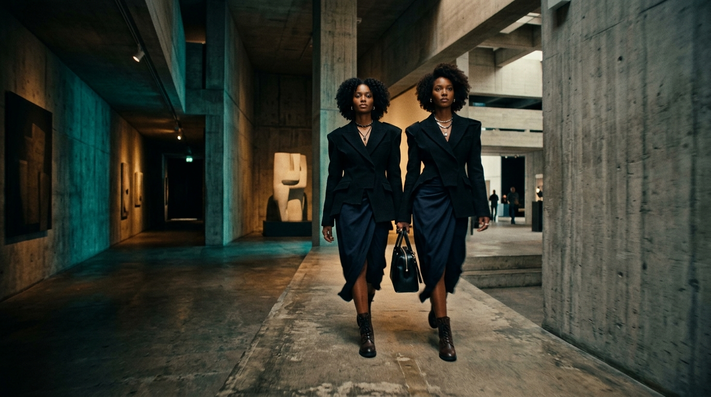
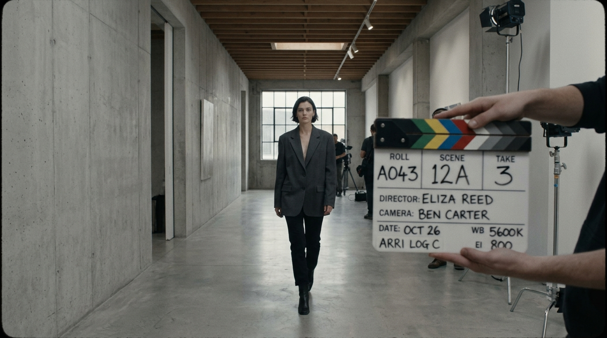

JAAAN // NARRATIVE CUT
A high-intensity, emotion-driven vertical cut engineered with rapid pacing, micro match cuts, and custom atmospheric sound design.
THE APPROACH
Hook construction within 1.2 seconds. In vertical video, the opening three frames dictate whether the viewer stays or swipes away. We established immediate visual interest through a high-contrast eye-level close-up paired with an unexpected audio transient.
Every subsequent cut was aligned with musical rhythm and emotional accents. Rather than letting scenes drag, every dead frame was trimmed with surgical precision to maintain momentum without feeling frantic.
The color grading was pushed toward rich cinematic contrast with soft highlight rolloff, making the mobile screen feel like 35mm film emulsion.
RAW CAMERA PROFILE VS FINAL GRADE

FINAL COLOR GRADE // KODAK 2383
RAW CAMERA LOG // FLATMULTI-TRACK AUDIO STEMS
Acoustic layering giving depth to small smartphone speakers.